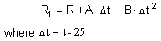

The resistor, like the current source, is a fundamental primitive. Temperature dependence is modelled by two parameters, used to define the first and second temperature coefficients, as in the following equation:

The resistor model has the following properties:
| Property | Default | Description |
TC1 |
0.0 |
The value A in the above expression. |
TC2 |
0.0 |
The value B in the above expression. |
TEMP |
27 |
Actual temperature of resistor. |
TNOM |
27 |
Temperature at which TC1, TC2 were measured. |
See Also: